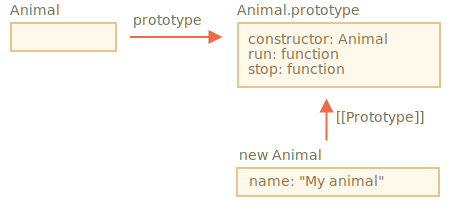
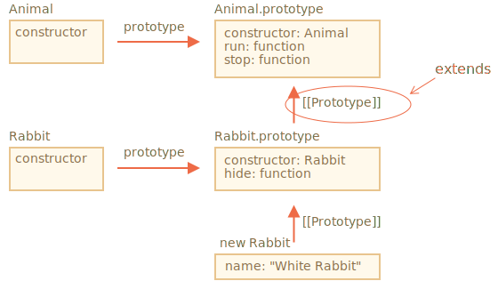
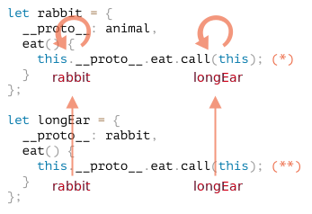
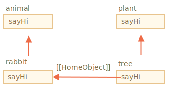

类继承是一个类扩展另一个类的一种方式。
因此，我们可以在现有功能之上创建新功能。
假设我们有 class Animal：
class Animal {
constructor(name) {
this.speed = 0;
this.name = name;
}
run(speed) {
this.speed = speed;
alert(`${this.name} runs with speed ${this.speed}.`);
}
stop() {
this.speed = 0;
alert(`${this.name} stands still.`);
}
}
let animal = new Animal("My animal");这是我们对对象 animal 和 class Animal 的图形化表示：

……然后我们想创建另一个 class Rabbit：
因为 rabbits 是 animals，所以 class Rabbit 应该是基于 class Animal 的，可以访问 animal 的方法，以便 rabbits 可以做“一般”动物可以做的事儿。
扩展另一个类的语法是：class Child extends Parent。
让我们创建一个继承自 Animal 的 class Rabbit：
*!*
class Rabbit extends Animal {
*/!*
hide() {
alert(`${this.name} hides!`);
}
}
let rabbit = new Rabbit("White Rabbit");
rabbit.run(5); // White Rabbit runs with speed 5.
rabbit.hide(); // White Rabbit hides!Class Rabbit 的对象可以访问例如 rabbit.hide() 等 Rabbit 的方法，还可以访问例如 rabbit.run() 等 Animal 的方法。
在内部，关键字 extends 使用了很好的旧的原型机制进行工作。它将 Rabbit.prototype.[[Prototype]] 设置为 Animal.prototype。所以，如果在 Rabbit.prototype 中找不到一个方法，JavaScript 就会从 Animal.prototype 中获取该方法。

例如，要查找 rabbit.run 方法，JavaScript 引擎会进行如下检查（如图所示从下到上）：
rabbit（没有 run）。Rabbit.prototype（有 hide，但没有 run）。extends）Animal.prototype，在这儿找到了 run 方法。我们可以回忆一下 info:native-prototypes 这一章的内容，JavaScript 内建对象同样也使用原型继承。例如，Date.prototype.[[Prototype]] 是 Object.prototype。这就是为什么日期可以访问通用对象的方法。
````smart header="在 extends 后允许任意表达式"
类语法不仅允许指定一个类，在 extends 后可以指定任意表达式。
例如，一个生成父类的函数调用：
function f(phrase) {
return class {
sayHi() { alert(phrase) }
}
}
*!*
class User extends f("Hello") {}
*/!*
new User().sayHi(); // Hello这里 class User 继承自 f("Hello") 的结果。
这对于高级编程模式，例如当我们根据许多条件使用函数生成类，并继承它们时来说可能很有用。
## 重写方法
现在，让我们继续前行并尝试重写一个方法。默认情况下，所有未在 `class Rabbit` 中指定的方法均从 `class Animal` 中直接获取。
但是如果我们在 `Rabbit` 中指定了我们自己的方法，例如 `stop()`，那么将会使用它：
```js
class Rabbit extends Animal {
stop() {
// ……现在这个将会被用作 rabbit.stop()
// 而不是来自于 class Animal 的 stop()
}
}
```
但是通常来说，我们不希望完全替换父类的方法，而是希望在父类方法的基础上进行调整或扩展其功能。我们在我们的方法中做一些事儿，但是在它之前或之后或在过程中会调用父类方法。
Class 为此提供了 `"super"` 关键字。
- 执行 `super.method(...)` 来调用一个父类方法。
- 执行 `super(...)` 来调用一个父类 constructor（只能在我们的 constructor 中）。
例如，让我们的 rabbit 在停下来的时候自动 hide：
```js run
class Animal {
constructor(name) {
this.speed = 0;
this.name = name;
}
run(speed) {
this.speed = speed;
alert(`${this.name} runs with speed ${this.speed}.`);
}
stop() {
this.speed = 0;
alert(`${this.name} stands still.`);
}
}
class Rabbit extends Animal {
hide() {
alert(`${this.name} hides!`);
}
*!*
stop() {
super.stop(); // 调用父类的 stop
this.hide(); // 然后 hide
}
*/!*
}
let rabbit = new Rabbit("White Rabbit");
rabbit.run(5); // White Rabbit 以速度 5 奔跑
rabbit.stop(); // White Rabbit 停止了。White rabbit hide 了！
```
现在，`Rabbit` 在执行过程中调用父类的 `super.stop()` 方法，所以 `Rabbit` 也具有了 `stop` 方法。
````smart header="箭头函数没有 `super`"
正如我们在 <info:arrow-functions> 一章中所提到的，箭头函数没有 `super`。
如果被访问，它会从外部函数获取。例如：
```js
class Rabbit extends Animal {
stop() {
setTimeout(() => super.stop(), 1000); // 1 秒后调用父类的 stop
}
}
```
箭头函数中的 `super` 与 `stop()` 中的是一样的，所以它能按预期工作。如果我们在这里指定一个“普通”函数，那么将会抛出错误：
```js
// 意料之外的 super
setTimeout(function() { super.stop() }, 1000);
```对于重写 constructor 来说，则有点棘手。
到目前为止，Rabbit 还没有自己的 constructor。
根据 规范，如果一个类扩展了另一个类并且没有 constructor，那么将生成下面这样的“空” constructor：
class Rabbit extends Animal {
// 为没有自己的 constructor 的扩展类生成的
*!*
constructor(...args) {
super(...args);
}
*/!*
}正如我们所看到的，它调用了父类的 constructor，并传递了所有的参数。如果我们没有写自己的 constructor，就会出现这种情况。
现在，我们给 Rabbit 添加一个自定义的 constructor。除了 name 之外，它还会指定 earLength。
class Animal {
constructor(name) {
this.speed = 0;
this.name = name;
}
// ...
}
class Rabbit extends Animal {
*!*
constructor(name, earLength) {
this.speed = 0;
this.name = name;
this.earLength = earLength;
}
*/!*
// ...
}
*!*
// 不工作！
let rabbit = new Rabbit("White Rabbit", 10); // Error: this is not defined.
*/!*哎呦！我们得到了一个报错。现在我们没法新建 rabbit。是什么地方出错了？
简短的解释是：
继承类的 constructor 必须调用 super(...)，并且 (!) 一定要在使用 this 之前调用。
……但这是为什么呢？这里发生了什么？确实，这个要求看起来很奇怪。
当然，本文会给出一个解释。让我们深入细节，这样你就可以真正地理解发生了什么。
在 JavaScript 中，继承类（所谓的“派生构造器”，英文为 "derived constructor"）的构造函数与其他函数之间是有区别的。派生构造器具有特殊的内部属性 [[ConstructorKind]]:"derived"。这是一个特殊的内部标签。
该标签会影响它的 new 行为：
new 执行一个常规函数时，它将创建一个空对象，并将这个空对象赋值给 this。因此，派生的 constructor 必须调用 super 才能执行其父类（base）的 constructor，否则 this 指向的那个对象将不会被创建。并且我们会收到一个报错。
为了让 Rabbit 的 constructor 可以工作，它需要在使用 this 之前调用 super()，就像下面这样：
class Animal {
constructor(name) {
this.speed = 0;
this.name = name;
}
// ...
}
class Rabbit extends Animal {
constructor(name, earLength) {
*!*
super(name);
*/!*
this.earLength = earLength;
}
// ...
}
*!*
// 现在可以了
let rabbit = new Rabbit("White Rabbit", 10);
alert(rabbit.name); // White Rabbit
alert(rabbit.earLength); // 10
*/!*这个要点假设你对类已经有了一定的经验，或许是在其他编程语言中。
这里提供了一个更好的视角来窥探这门语言，且解释了它的行为为什么可能会是 bugs 的来源(但不是非常频繁)。
如果你发现这难以理解，什么都别管，继续往下阅读，之后有机会再回来看。我们不仅可以重写方法，还可以重写类字段。
不过，当我们访问在父类构造器中的一个被重写的字段时，这里会有一个诡异的行为，这与绝大多数其他编程语言都很不一样。
请思考此示例：
class Animal {
name = 'animal'
constructor() {
alert(this.name); // (*)
}
}
class Rabbit extends Animal {
name = 'rabbit';
}
new Animal(); // animal
*!*
new Rabbit(); // animal
*/!*这里，Rabbit 继承自 Animal，并且用它自己的值重写了 name 字段。
因为 Rabbit 中没有自己的构造器，所以 Animal 的构造器被调用了。
有趣的是在这两种情况下：new Animal() 和 new Rabbit()，在 (*) 行的 alert 都打印了 animal。
换句话说， 父类构造器总是会使用它自己字段的值，而不是被重写的那一个。
古怪的是什么呢？
如果这还不清楚，那么让我们用方法来进行比较。
这里是相同的代码，但是我们调用 this.showName() 方法而不是 this.name 字段：
class Animal {
showName() { // 而不是 this.name = 'animal'
alert('animal');
}
constructor() {
this.showName(); // 而不是 alert(this.name);
}
}
class Rabbit extends Animal {
showName() {
alert('rabbit');
}
}
new Animal(); // animal
*!*
new Rabbit(); // rabbit
*/!*请注意：这时的输出是不同的。
这才是我们本来所期待的结果。当父类构造器在派生的类中被调用时，它会使用被重写的方法。
……但对于类字段并非如此。正如前文所述，父类构造器总是使用父类的字段。
这里为什么会有这样的区别呢？
实际上，原因在于字段初始化的顺序。类字段是这样初始化的：
super() 后立刻初始化。在我们的例子中，Rabbit 是派生类，里面没有 constructor()。正如先前所说，这相当于一个里面只有 super(...args) 的空构造器。
所以，new Rabbit() 调用了 super()，因此它执行了父类构造器，并且（根据派生类规则）只有在此之后，它的类字段才被初始化。在父类构造器被执行的时候，Rabbit 还没有自己的类字段，这就是为什么 Animal 类字段被使用了。
这种字段与方法之间微妙的区别只特定于 JavaScript。
幸运的是，这种行为仅在一个被重写的字段被父类构造器使用时才会显现出来。接下来它会发生的东西可能就比较难理解了，所以我们要在这里对此行为进行解释。
如果出问题了，我们可以通过使用方法或者 getter/setter 替代类字段，来修复这个问题。
如果你是第一次阅读本教程，那么则可以跳过本节。
这是关于继承和 `super` 背后的内部机制。让我们更深入地研究 super。我们将在这个过程中发现一些有趣的事儿。
首先要说的是，从我们迄今为止学到的知识来看，super 是不可能运行的。
的确是这样，让我们问问自己，以技术的角度它是如何工作的？当一个对象方法执行时，它会将当前对象作为 this。随后如果我们调用 super.method()，那么引擎需要从当前对象的原型中获取 method。但这是怎么做到的？
这个任务看起来是挺容易的，但其实并不简单。引擎知道当前对象的 this，所以它可以获取父 method 作为 this.__proto__.method。不幸的是，这个“天真”的解决方法是行不通的。
让我们演示一下这个问题。简单起见，我们使用普通对象而不使用类。
如果你不想知道更多的细节知识，你可以跳过此部分，并转到下面的 [[HomeObject]] 小节。这没关系的。但如果你感兴趣，想学习更深入的知识，那就继续阅读吧。
在下面的例子中，rabbit.__proto__ = animal。现在让我们尝试一下：在 rabbit.eat() 我们将会使用 this.__proto__ 调用 animal.eat()：
let animal = {
name: "Animal",
eat() {
alert(`${this.name} eats.`);
}
};
let rabbit = {
__proto__: animal,
name: "Rabbit",
eat() {
*!*
// 这就是 super.eat() 可以大概工作的方式
this.__proto__.eat.call(this); // (*)
*/!*
}
};
rabbit.eat(); // Rabbit eats.在 (*) 这一行，我们从原型（animal）中获取 eat，并在当前对象的上下文中调用它。请注意，.call(this) 在这里非常重要，因为简单的调用 this.__proto__.eat() 将在原型的上下文中执行 eat，而非当前对象。
在上面的代码中，它确实按照了期望运行：我们获得了正确的 alert。
现在，让我们在原型链上再添加一个对象。我们将看到这件事是如何被打破的：
let animal = {
name: "Animal",
eat() {
alert(`${this.name} eats.`);
}
};
let rabbit = {
__proto__: animal,
eat() {
// ...bounce around rabbit-style and call parent (animal) method
this.__proto__.eat.call(this); // (*)
}
};
let longEar = {
__proto__: rabbit,
eat() {
// ...do something with long ears and call parent (rabbit) method
this.__proto__.eat.call(this); // (**)
}
};
*!*
longEar.eat(); // Error: Maximum call stack size exceeded
*/!*代码无法再运行了！我们可以看到，在试图调用 longEar.eat() 时抛出了错误。
原因可能不那么明显，但是如果我们跟踪 longEar.eat() 调用，就可以发现原因。在 (*) 和 (**) 这两行中，this 的值都是当前对象（longEar）。这是至关重要的一点：所有的对象方法都将当前对象作为 this，而非原型或其他什么东西。
因此，在 (*) 和 (**) 这两行中，this.__proto__ 的值是完全相同的：都是 rabbit。它们俩都调用的是 rabbit.eat，它们在不停地循环调用自己，而不是在原型链上向上寻找方法。
这张图介绍了发生的情况：

在 longEar.eat() 中，(**) 这一行调用 rabbit.eat 并为其提供 this=longEar。
// 在 longEar.eat() 中我们有 this = longEar
this.__proto__.eat.call(this) // (**)
// 变成了
longEar.__proto__.eat.call(this)
// 也就是
rabbit.eat.call(this);之后在 rabbit.eat 的 (*) 行中，我们希望将函数调用在原型链上向更高层传递，但是 this=longEar，所以 this.__proto__.eat 又是 rabbit.eat！
// 在 rabbit.eat() 中我们依然有 this = longEar
this.__proto__.eat.call(this) // (*)
// 变成了
longEar.__proto__.eat.call(this)
// 或（再一次）
rabbit.eat.call(this);……所以 rabbit.eat 在不停地循环调用自己，因此它无法进一步地提升。
这个问题没法仅仅通过使用 this 来解决。
[[HomeObject]]为了提供解决方法，JavaScript 为函数添加了一个特殊的内部属性：[[HomeObject]]。
当一个函数被定义为类或者对象方法时，它的 [[HomeObject]] 属性就成为了该对象。
然后 super 使用它来解析（resolve）父原型及其方法。
让我们看看它是怎么工作的，首先，对于普通对象：
let animal = {
name: "Animal",
eat() { // animal.eat.[[HomeObject]] == animal
alert(`${this.name} eats.`);
}
};
let rabbit = {
__proto__: animal,
name: "Rabbit",
eat() { // rabbit.eat.[[HomeObject]] == rabbit
super.eat();
}
};
let longEar = {
__proto__: rabbit,
name: "Long Ear",
eat() { // longEar.eat.[[HomeObject]] == longEar
super.eat();
}
};
*!*
// 正确执行
longEar.eat(); // Long Ear eats.
*/!*它基于 [[HomeObject]] 运行机制按照预期执行。一个方法，例如 longEar.eat，知道其 [[HomeObject]] 并且从其原型中获取父方法。并没有使用 this。
正如我们之前所知道的，函数通常都是“自由”的，并没有绑定到 JavaScript 中的对象。正因如此，它们可以在对象之间复制，并用另外一个 this 调用它。
[[HomeObject]] 的存在违反了这个原则，因为方法记住了它们的对象。[[HomeObject]] 不能被更改，所以这个绑定是永久的。
在 JavaScript 语言中 [[HomeObject]] 仅被用于 super。所以，如果一个方法不使用 super，那么我们仍然可以视它为自由的并且可在对象之间复制。但是用了 super 再这样做可能就会出错。
下面是复制后错误的 super 结果的示例：
let animal = {
sayHi() {
console.log(`I'm an animal`);
}
};
// rabbit 继承自 animal
let rabbit = {
__proto__: animal,
sayHi() {
super.sayHi();
}
};
let plant = {
sayHi() {
console.log("I'm a plant");
}
};
// tree 继承自 plant
let tree = {
__proto__: plant,
*!*
sayHi: rabbit.sayHi // (*)
*/!*
};
*!*
tree.sayHi(); // I'm an animal (?!?)
*/!*调用 tree.sayHi() 显示 "I'm an animal"。这绝对是错误的。
原因很简单：
(*) 行，tree.sayHi 方法是从 rabbit 复制而来。也许我们只是想避免重复代码？[[HomeObject]] 是 rabbit，因为它是在 rabbit 中创建的。没有办法修改 [[HomeObject]]。tree.sayHi() 内具有 super.sayHi()。它从 rabbit 中上溯，然后从 animal 中获取方法。这是发生的情况示意图：

[[HomeObject]] 是为类和普通对象中的方法定义的。但是对于对象而言，方法必须确切指定为 method()，而不是 "method: function()"。
这个差别对我们来说可能不重要，但是对 JavaScript 来说却非常重要。
在下面的例子中，使用非方法（non-method）语法进行了比较。未设置 [[HomeObject]] 属性，并且继承无效：
let animal = {
eat: function() { // 这里是故意这样写的，而不是 eat() {...
// ...
}
};
let rabbit = {
__proto__: animal,
eat: function() {
super.eat();
}
};
*!*
rabbit.eat(); // 错误调用 super（因为这里没有 [[HomeObject]]）
*/!*class Child extends Parent：Child.prototype.__proto__ 将是 Parent.prototype，所以方法会被继承。this 之前，我们必须在 Child 的 constructor 中将父 constructor 调用为 super()。Child 方法中使用 super.method() 来调用 Parent 方法。[[HomeObject]] 属性中记住了它们的类/对象。这就是 super 如何解析父方法的。super 的方法从一个对象复制到另一个对象是不安全的。补充：
this 或 super，所以它们能融入到就近的上下文中，像透明似的。